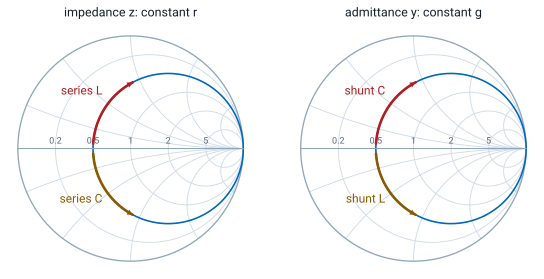
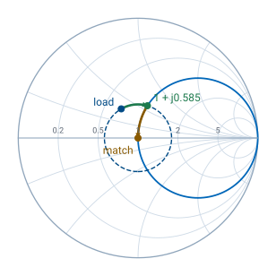

L12 - Smith Charts III#
Smith Charts III
Today we match a load with a length of line and one capacitor or inductor.
Lesson 12 · Module 1: Foundations · Maj Ellis · Dr. Neil Rogers
Learning Objectives
- I can use the Smith Chart to solve transmission line problems.
Lessons 8 and 9 matched loads with a quarter-wave transformer and with lumped elements, using algebra. The Smith chart turns that design into geometry: the match is the center of the chart, a length of line rotates the load around its VSWR circle, and a lumped element slides it along a grid circle. Today we derive how a series element and a shunt element move a point, why the \(r = 1\) circle is the one to aim for, and how far to rotate to reach it. Then we design a match for a real load both ways and find that each way has two answers.
The Goal: Reach the Center
The match is \(z = 1\): the center of the chart.
Line: rotate on the VSWR circle; \(\vert\Gamma\vert\) fixed.
Reactive element: slide along a grid circle; \(\vert\Gamma\vert\) changes.
Plan: rotate onto a circle through the center, then slide in.
A load is matched when the source sees \(Z_0\), which on the chart is the center. Lesson 11 showed that a lossless line moves the point around a circle centered on the chart, so line alone can never reach the center from anywhere else. We need a second move that changes \(\vert\Gamma\vert\), and a lossless capacitor or inductor provides one. The design has two steps: choose a line length that puts the point on a grid circle passing through the center, then choose an element that slides it along that circle to the center.
Series Reactance Moves Along Constant r
Series L, \(x_s = \omega L/Z_0 > 0\): up the \(r\) circle, clockwise.
Series C, \(x_s = -1/\left(\omega C Z_0\right) < 0\): down, counterclockwise.
An element in series with the line adds its impedance to the impedance already there. A lossless element adds only reactance, so the resistance does not change and the point stays on its constant-\(r\) circle. An inductor adds positive reactance and moves the point toward the upper half of the chart, which on a constant-\(r\) circle is clockwise. A capacitor adds negative reactance and moves it counterclockwise toward the lower half. The amount is read from the reactance arcs where the move starts and ends.
Shunt Susceptance Moves Along Constant g

An element in shunt adds its admittance instead: \(y_{new} = y + jb_s = g + j\left(b + b_s\right)\). Lesson 11 placed admittance on the same grid at \(-\Gamma\), so the same picture applies with \(g\) in place of \(r\) and \(b\) in place of \(x\). A capacitor adds positive susceptance, \(b_s = \omega C Z_0\), and moves \(y\) up its constant-\(g\) circle; an inductor adds \(b_s = -Z_0/(\omega L)\) and moves it down. The arrows are the same as for series elements with the labels swapped, because a capacitor’s susceptance and an inductor’s reactance are both positive. Mixing the two readings is the most common Smith chart error, so we always state whether a point is \(z\) or \(y\).
Why the r = 1 Circle
On the \(r = 1\) circle, \(\Gamma_r^2 + \Gamma_i^2 = \Gamma_r\), so \(\Gamma_r = \vert\Gamma\vert^2\):
The only constant-\(r\) circle through the center is \(r = 1\), so after the rotation the input must sit on it, at \(z = 1 + jx\); the series element then adds \(-jx\). Lesson 10’s circle with \(r = 1\) has center \((1/2, 0)\) and radius \(1/2\), and expanding it gives \(\Gamma_r^2 + \Gamma_i^2 = \Gamma_r\): on this circle the real part of \(\Gamma\) equals \(\vert\Gamma\vert^2\). We substitute that into Lesson 10’s expression for \(x\), expand \(\left(1 - \Gamma_r\right)^2 + \Gamma_i^2 = 1 - 2\Gamma_r + \vert\Gamma\vert^2\), and replace \(\Gamma_r\) again. Solving the circle for \(\Gamma_i\) finishes the chain. The VSWR circle crosses \(r = 1\) twice, at \(\pm x\), and the angle of the upper crossing is \(\cos^{-1}\vert\Gamma\vert\), which sets how far to rotate.
The Series-Element Procedure
Plot \(z_L\) and its VSWR circle.
Rotate toward the generator to \(r = 1\): \(z = 1 \pm jx\).
Read \(d\) on the WTG scale.
Add a series \(\mp jx\).
Convert \(xZ_0\) to C or L at \(f\).
The procedure follows the two moves. The rotation sets the line length \(d\) between the load and the element, measured on the WTG scale as in Lesson 11. The element cancels the reactance at that point, and its value comes from \(\omega L = xZ_0\) for an inductor or \(1/(\omega C) = xZ_0\) for a capacitor. Both crossings of the \(r = 1\) circle work, and the first one reached gives the shorter line.
Worked Example: Series Capacitor

Worked example — 33.9 + j17.9 Ω at 1 GHz
The load \(Z_L = 33.9 + j17.9\ \Omega\) terminates a \(50\ \Omega\) line, so \(z_L = 0.678 + j0.358\) and \(\Gamma_L = 0.281\angle 119.9^\circ\), which reads \(0.083\lambda\) on the WTG scale. The \(r = 1\) circle needs \(x = 2(0.281)/\sqrt{1 - 0.281^2} = 0.585\), and its upper crossing is at \(\cos^{-1}0.281 = 73.7^\circ\). Turning clockwise from \(119.9^\circ\) to \(73.7^\circ\) is \(46.2^\circ\), so \(d = 46.2^\circ/720^\circ = 0.0642\lambda\), and the input is \(z = 1 + j0.585\). A series capacitor of \(-j0.585\), or \(-j29.2\ \Omega\), finishes the match:
On a cable with \(v_p = 2\times10^{8}\ \text{m/s}\), \(\lambda = 20\ \text{cm}\), so the capacitor goes \(12.8\ \text{mm}\) from the load.
The Second Solution
Keep turning to the lower crossing, \(z = 1 - j0.585\):
\(d = 0.0642\lambda + \dfrac{2\left(73.7^\circ\right)}{720^\circ}\lambda = 0.2689\lambda\)
Series inductor: \(L = \dfrac{0.585\left(50\right)}{2\pi\left(10^9\right)} = 4.65\ \text{nH}\)
The VSWR circle crosses \(r = 1\) a second time, below the real axis. Getting there takes another \(2 \times 73.7^\circ\) of rotation, so the line is \(0.2689\lambda\) long, and the input there is \(1 - j0.585\). The reactance to cancel is now positive, so the element is an inductor. The first solution uses less line, which means less loss and a wider bandwidth, because a shorter line changes its electrical length less as the frequency moves. The second solution may still be the better choice when an inductor is easier to build than a capacitor, or when the element must sit farther from the load.
Shunt-Element Matching
Start from \(y_L\) at \(-\Gamma_L\); rotate to the \(g = 1\) circle; cancel \(b\).
\(d = 0.0189\lambda\): \(y = 1 - j0.585\), shunt C of \(+j0.585\): \(C = 1.86\ \text{pF}\)
\(d = 0.3142\lambda\): \(y = 1 + j0.585\), shunt L of \(-j0.585\): \(L = 13.6\ \text{nH}\)
A shunt element adds admittance, so we work with \(y\) throughout. The load admittance is the point opposite the load, \(-\Gamma_L\), at \(0.281\angle -60.1^\circ\), which reads \(0.333\lambda\) on the WTG scale. The rotation is the same clockwise turn, because admittance moves along the line exactly as impedance does, and the \(g = 1\) circle is the same circle as \(r = 1\). The upper crossing is at \(73.7^\circ\); turning clockwise from \(-60.1^\circ\) reaches the lower crossing at \(-73.7^\circ\) first, after \(0.0189\lambda\). There \(y = 1 - j0.585\), and a shunt capacitor with \(\omega C = 0.585/50\) cancels it. The upper crossing comes \(0.2953\lambda\) later and needs a shunt inductor with \(1/(\omega L) = 0.585/50\).
Matching on the Explorer
The explorer opens on the worked example with the line set to \(0.0642\lambda\). The input sits on the highlighted \(r = 1\) circle, and the readout gives \(z_{in} \approx 1 + j0.585\), the reactance the series capacitor must cancel. Drag \(d\) to \(0.2689\lambda\) for the second series solution. Turn on the admittance readout and drag \(d\) to \(0.0189\lambda\) and \(0.3142\lambda\) to find the two shunt solutions, where the amber point lands on the same circle.
Summary
Symbol / idea |
What it is |
Number to remember |
|---|---|---|
Series element |
Adds \(jx_s\); moves along constant \(r\) |
L up, C down |
Shunt element |
Adds \(jb_s\); moves along constant \(g\) |
C up, L down |
Target circle |
\(r = 1\) for series, \(g = 1\) for shunt |
the only circle through the center |
Reactance there |
\(x = \pm\frac{2\vert\Gamma\vert}{\sqrt{1 - \vert\Gamma\vert^2}}\) |
crossing at \(\cos^{-1}\vert\Gamma\vert\) |
Element values |
From \(x Z_0\) or \(b/Z_0\) |
\(\omega L = xZ_0\), \(\frac{1}{\omega C} = xZ_0\) |
Two solutions |
Two crossings of the VSWR circle |
shorter line, wider bandwidth |
Practice
Where This Is Going
Lesson 13: replace the lumped element with a shorted or open stub of line.
A 5.44 pF capacitor at 1 GHz is hard to buy with the right value and harder to mount without adding inductance of its own. At microwave frequencies we build the reactance from the line itself: a short length of line ending in a short or an open circuit has a purely reactive input impedance. Lesson 13 derives that reactance and uses the shunt procedure from today to design a single-stub tuner.